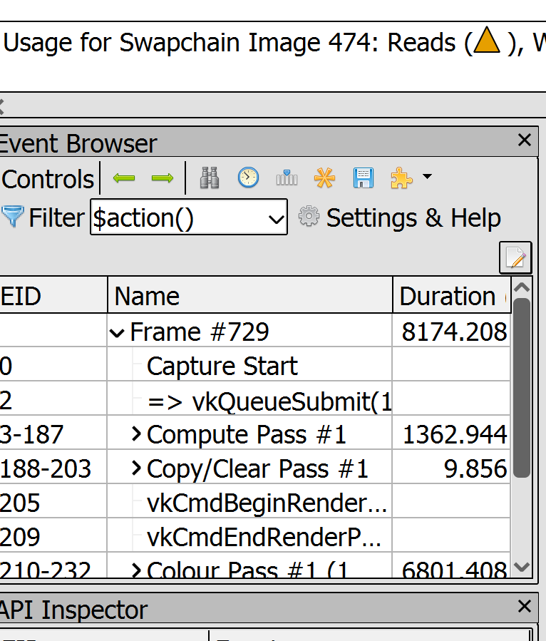

To start this project, I had to learn a bit about fluid dynamics and the navier-stokes equation, which took some time for me to understand it on a surface level enough to gain intuition about how Jos Stam's paper works, discretizing the velocity field into grid cells. I also learned about iterative numerical algorithms to solve linear systems like the Gauss-Seidel method and the Jacobi method. I implemented all the necessary steps to model the fluid velocity volume: add sources, diffuse(for viscous fluids), advect and project, which is an operation that does the Helmhotz decomposition to (try to) make the velocity field divergence free.
I also learned about working with compute shaders. Specifically, the ping-pong technique and how Gauss-Seidel could be parallelized/approximated using a Red-Black Gauss-Seidel method. The compute pipeline is surprisingly quite a bit simpler to set up compared to the graphics pipeline, since it's just computation.
In all the video demos showcased in this report, two methods are used to visualize fluid dynamics. First one is the quads on the top and bottom of the screen. They are slices of the 3D volume for density and velocity, in the velocity volume, grey is no velocity, and variations in r,g,b, correspond x,y,and z components of the velocities. For density it's simply white times density.
In the middle is the ray-marched 3D volume in which fluids are flowing, the density is ray-marched naively without account for lighting or alpha compositing(for now).
The fire is made by setting the raymarch accumulated density to multiply by an orange color. The diffusion step for velocity is omitted to make fluid less viscous(little velocity diffusion); Velocity is added each frame to the fire source region The density is not added each frame to the fire source region but set to a fixed value for the region, so that the density doesn't fill the whole volume
Here, the fluid is viscous(the velocity field changes less rapidly) and flow starts off being non-turbulent. Swrils could be seen.
--scene scene.s72 -- required -- load scene from scene.s72--nocull -- optional -- disable culling--camera CAMERA_NAME -- optional -- select camera named CAMERA_NAME--drawing-size width height -- optional -- specify window size --headless -- optional -- run in headless mode --exposure e -- optional -- change exposure of tone mapping, default is 0 --tone-map type -- optional -- change curve of tone mapping, default is linear This part is simple, although I didn't have time to implement any interactive mechanisms to do this part. I experimented with two ways of adding sources, first one is actually adding a certain amount to a region every frame, the other is to set a certain region to always be a certain value. I found out that, for velocity, the first option leads to turbulent flow over time because the velocity flow would fill the volume and kind of run back into itself due to the project step later, which preserves the curl of the field.
With density, if we use the first option, it almost always fill up the whole space and the whole space would converge to a homogenous density. But with the second option, the densities seem to stay mostly local, and would dissipate before it could go out and fill the whole volume.
Diffusion happens also for both density and velocity. Jos Stam's paper proposes that, in order for this eulerian fluid dynmics to be stable, i.e. not have oscillitor behavior due to update steps over shooting, is to solve diffusion backwards, resulting in a linear system of equations, which he solved on the CPU using Gauss-Seidel method. I watched Sebastian's coding adventure video to learn that you could do a red-black Gauss-Seidel thing to parallelize it on the GPU.
Below are some demonstation of effects of differnt diff values in the diffusion shader for density, since the flow is due to velocity advection, they look pretty much similar, but it's apparent that in high diff values, the aliasing artifact is more reduced.
diff = 0.0000000001
diff = 0.1
diff = 1000
Advection also uses a backwards approach, outlined in Stam's paper. The effect of advection depends on the velocity field itself, so it's less parameterizeable.
Divergence in the velocity field happens when the velocity field is not mass-conserving. The project step makes the field more mass-conserving, after diffuse and advect, which might break mass-conservation. Projection (to me), is the most crucial for creating realistic fluid flow; It creates swirls because it forces the whole velocity volume to become consistend with itself, creating a sense of "flow".
diff = 1000, no projection, no "flow"
